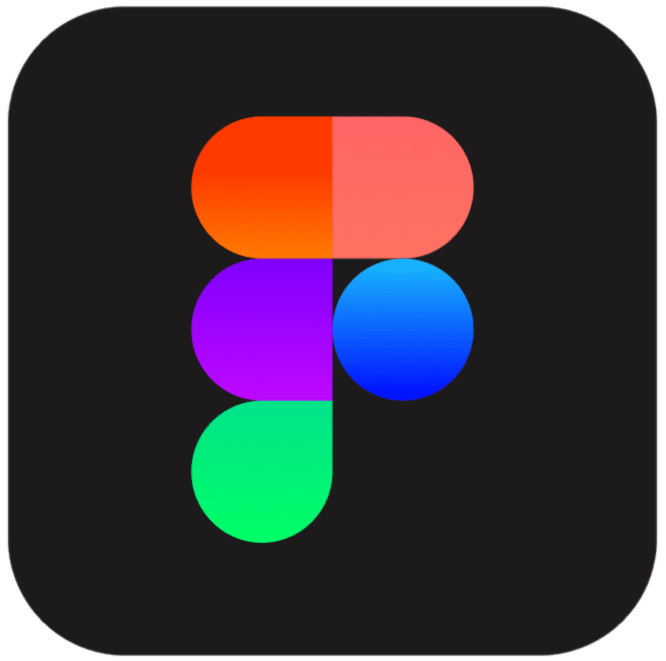
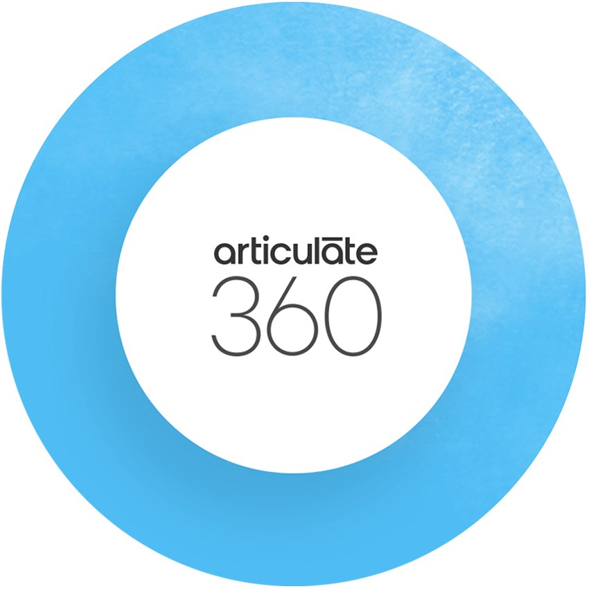
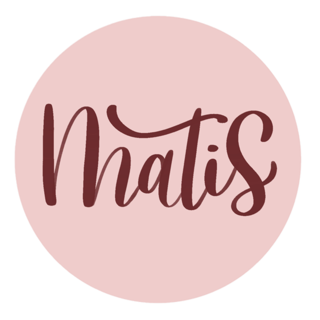

Bonjour! Je suis
Diana Arciniegas Cruz
Conceptrice Pédagogique
Conceptrice pédagogique - Graphiste et titulaire d'un Master en Sciences de l'éducation et de la formation - Didactique professionnelle. Je suis passionnée par l'éducation et la créativité, et j'aime travailler avec les enfants pour les aider à développer leur imagination et leurs compétences.
Á propos de moi
Diana Arciniegas Cruz
Je suis Conceptrice Pédagogique - Graphiste et titulaire d'un Master en Sciences de l'éducation et de la formation - Didactique professionnelle.
Je suis passionnée par l'éducation et la créativité, et j'aime travailler avec les enfants pour les aider à développer leur imagination et leurs compétences. Mon expertise réside dans la création d'ateliers avec la méthodologie STEAM, où les enfants peuvent apprendre la science, la technologie, l'ingénierie, l'art et les mathématiques d'une manière amusante et pratique.
En outre, j'aime animer des ateliers de lettering et de calligraphie, où je peux partager mon amour de l'écriture et enseigner aux enfants les techniques nécessaires pour créer des lettres belles et personnalisées. Enfin, je suis également passionnée par la médiation en architecture et en urbanisme, où je peux aider les enfants à comprendre et à apprécier le monde construit qui les entoure.
Compétences

Photoshop
Illustrator
InDesign
Procreate

Figma

Articulate 360

Calligraphie et Lettering

Design Thinking
HTML 5
CSS 3
Formation
Master en Sciences de l'éducation et de la formation
2022
Formation Continue, Technologie éducative / pédagogique
2022 - 2023
Professionnelle en Design Graphique
2008
Projets
Contact
Vous avez besoin d’une personne passionnée pour apporter une valeur ajoutée à votre projet ? Parlons-en !